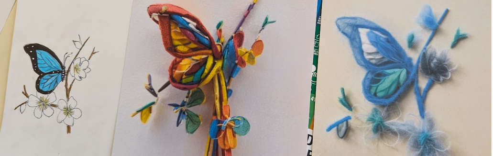

Drawing plus Textures

In this activity, learners will create artwork using available art materials and use image-generative AI to combine patterns and textures created with materials with their artwork and iterate on it. Using crafting or other materials, they will generate textures that can transform their artworks.
Activity Instructions
Drawing plus Texture
Upload your artwork (Structure) and a texture image (Material) to combine them with AI.
Materials
- Texture materials
- Fabric
- Cotton / Felt
- Fake fur
- Toothpicks
- Popsicle sticks
- Paper clips (whites)
- Packing peanuts
- Alligator clips
- Beads
Guiding Questions for AI Ethics Literacy
Inclusive growth, sustainable development, and well-being
- Enhancing creativity: You created your own textures from physical materials (fabric, cotton, toothpicks), how did this hands-on process of creating the style yourself change your connection to the final AI-generated artwork?
- Augmenting human capabilities: You used AI to apply a texture to your drawing in a way that would be very difficult or time-consuming to do by hand. Did this feel like the AI was a helpful tool that augmented your abilities, or did it feel like it took over the creative process?
- Advancing inclusion of underrepresented populations: Does technology like this make artistic expression more inclusive and accessible to people who may not have traditional art training?
Respect for the rule of law, human rights and democratic values, including fairness and privacy
- Supporting human agency and autonomy: In this activity, you provided both the main image (your drawing) and the style (your texture), who is the primary author of the final image?
Transparency and explainability
- Telling how AI outcomes are generated: Look at your original drawing, your texture photo, and the final combined image. Can you trace a clear line and explain how the AI decided to apply the texture to specific parts of your drawing? What parts of its decision-making process are a complete mystery (a “black box”)?
- Fostering understanding: What information would the AI tool need to provide for you to feel like you truly understood how it created the final image (e.g., a map showing which texture pixels influenced which drawing pixels)?
Robustness, security, and safety
- Ensuring robustness: Did it create a good result, or did it get confused and produce errors or strange artifacts?
- Speculating foreseeable use: What are some other potential uses for a technology that can apply the texture of one thing to the shape of another?
.svg)
.svg)
.svg)
.svg)
.svg)
.svg)

.svg)